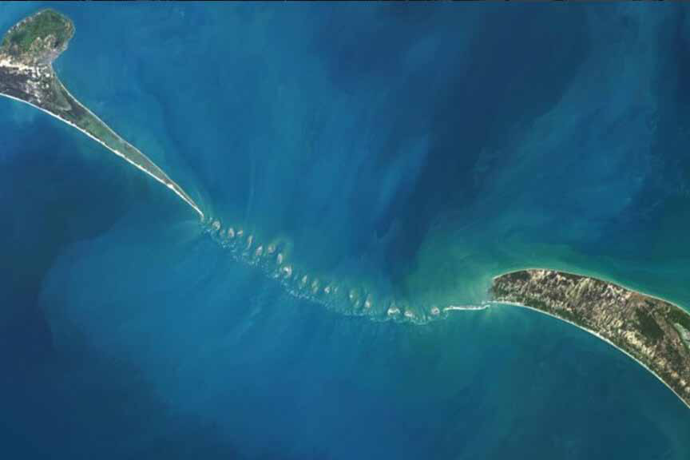
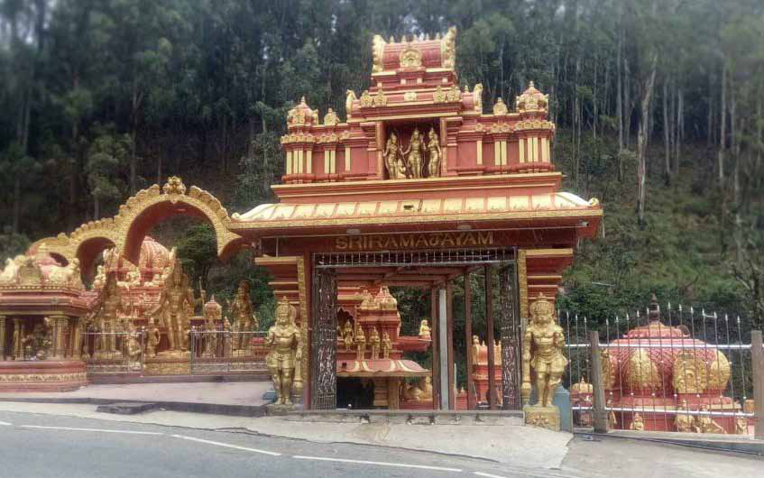
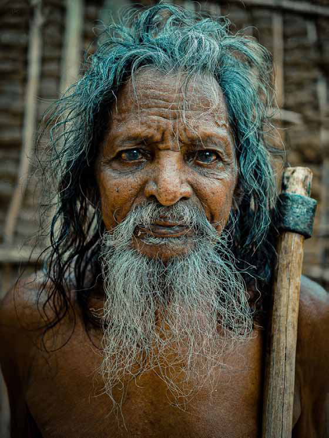
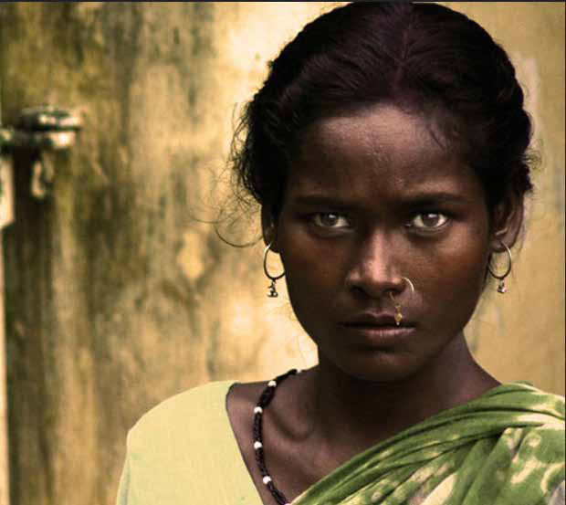

Sri Lanka Unveils Shree Ramayan Trails to Captivate
Sri Lanka Unveils Shree Ramayan Trails to Captivate
Jaffna Monitor hellojaffnamonitor@gmail.com 34 S ri Lanka has formally launched the Shree Ramayan Trails project, an ambitious initiative designed to draw millions of Indian and international Hindu pilgrims, travellers, and tourists. This initiative connects various locales mentioned in the epic Ramayana, spotlighting nine sacred sites across Sri Lanka, from Adam's Bridge in the Mannar Basin to Seetha Eliya in Nuwara Eliya, each imbued with significant historical and religious importance from the ancient Hindu epic. A collaborative effort between Sri Lanka and India, this project mirrors the deep cultural bonds between the two nations and aims to bolster Sri Lanka's tourism industry by offering tailored pilgrimages and travel experiences centred around these storied sites. The featured locations in the Ramayan Trails include: Sri Lanka Unveils Shree Ramayan Trails to Captivate Pilgrims and Tourists By: Our Reporter Adam's Bridge, the natural chain of limestone shoals stretching between India and Sri Lanka, capturing the serene and historic connection between the two nations.

Jaffna Monitor hellojaffnamonitor@gmail.com 35 • Adam's Bridge, Mannar Basin: Celebrated as the mythological bridge constructed by Lord Rama's army. • Ravana's Cave, Ella: Touted as the secret refuge where Ravana concealed Sita. • Ashok Vatika, Nuwara Eliya: The serene garden where Sita was detained during her captivity. • Divurumpola Temple, Welimada: Famous for the site of Sita's "Agni Pariksha," a test of her purity. • Ussangoda, Hambantota: Noted for its connection to celestial phenomena subsequent to Hanuman's encounter with Sita. • Koneswaram Temple, Trincomalee: An age-old Shiva temple that was visited by Lord Rama. • Manavari Temple, Chilaw: Distinguished as the site of the first lingam installed by Rama. • Kataragama Temple, Kataragama: A sacred site esteemed in both Buddhist and Hindu traditions. • Seetha Eliya, Nuwara Eliya: Situated near Ashok Vatika, this site encompasses the revered Seetha Amman Temple. The project integrates state-of-the-art technology to elevate the visitor experience, including virtual and augmented reality, to provide immersive storytelling and educational insights about the epic's connections to these revered locales. This cultural and spiritual initiative is anticipated to significantly impact the recovery and expansion of Sri Lanka's tourism sector, presenting global travellers with a unique fusion of religious tourism and technological innovation. Seetha Eliya in Nuwara Eliya, a serene and picturesque location steeped in the lore of the Ramayana, where it is believed Sita was held captive by Ravana, adding a rich layer of mythological significance to the landscape.

Jaffna Monitor hellojaffnamonitor@gmail.com 36 In a compelling public statement, M.A. Sumanthiran, a prominent member of the Tamil National Alliance (TNA) and parliamentarian for Jaffna, has made a poignant appeal to Tamil diaspora entrepreneurs. During a video interview with a Tamil online media platform, Sumanthiran, a key figure in the leadership dynamics of the Ilankai Tamil Arasu Kachchi (ITAK), voiced significant concerns about the encroachment of financial interests into politics. He emphatically urged these business leaders to refrain from political engagements, highlighting the increasing anxieties about the role of Sumanthiran Calls for Business Diaspora to Steer Clear of Politics By: T.Kathirgamanathan Opinion
Jaffna Monitor hellojaffnamonitor@gmail.com 37 wealth in shaping political outcomes. "Please withdraw from Tamil national politics," implored Sumanthiran in his statement. He emphasized that monetary dealings could potentially derail the Tamil people's journey toward liberation. He expressed that business activities and profit-making ventures should operate independently of national political interests. During the interview, Sumanthiran responded to an incisive inquiry regarding whether any diaspora Tamil businessmen had broached the topic of financial contributions with him or his colleague Sritharan during their campaign for the leadership of the Tamil National Alliance. He described receiving an indirect proposal through a third party, which suggested that a political party was "for sale" and inquired about his interest. Sumanthiran emphasized that he never had direct contact with the businessman behind the message and could not reveal their identity. The interaction highlights the complicated relationship between politics and business within the Tamil community, where significant influence is exerted by wealthy expatriates. "This is becoming a major issue today," Sumanthiran noted, pointing to instances in past parliamentary elections where external financial influences reportedly swayed opinions against him. He recounted a specific communication from an influential figure holding a significant international position at the time, warning him about the infusion of money into politics in the northern regions. Sumanthiran's appeal to the diaspora to steer clear of political involvement highlights ongoing concerns about the impact of financial influence on governance and the potential complications it could bring to the Tamil community's pursuit of fairness and self- determination. As the Tamil community progresses politically, the interaction between diaspora wealth and local politics continues to be a topic of debate. To provide a more comprehensive understanding of the dynamics at play, it is important to recognize that the concerns voiced by M.A. Sumanthiran about the influence of diaspora money in local politics are not confined to any single faction within the Tamil National Alliance (TNA) or Ilankai Tamil Arasu Kachchi (ITAK). These issues affect various political groups within the Tamil community, each influenced differently by their diaspora connections. For instance, the Tamil National People's Front (TNPF) has often been criticized for aligning more closely with the interests of certain diaspora groups, which are seen as surrogates for the former Liberation Tigers of Tamil Eelam (LTTE). Critics argue that this alignment might prioritize the agenda of these diaspora groups over the immediate needs and aspirations of the local Tamil population in Sri Lanka. This underscores the complexity of diaspora influence across the spectrum of Tamil political parties, each of which may be swayed by external interests that do not always align with local priorities.
Jaffna Monitor hellojaffnamonitor@gmail.com 38 R esearchers from the Centre for Cellular and Molecular Biology in Hyderabad and the University of Colombo have revealed significant findings in a recent study that shed light on the genetic origins of the Vedda tribe, Sri Lanka's indigenous inhabitants. The study, published in the journal 'Mitochondrion', indicates a strong genetic link between the Vedda and certain tribal groups in India, potentially rewriting the narrative of ethnic and cultural histories in South Asia. The collaborative research analyzed DNA samples from 37 Vedda individuals to compare their genetic makeup with that of various tribal populations across India, including the Austroasiatic Munda-speaking Santhal and Juang tribes of Odisha, as well as the Dravidian-speaking Irula, Paniya, and Pallar tribes New Genetic Insights Reveal Ancient Connections Between Sri Lanka's Vedda and Indian Tribes A Sri Lankan Vedda man from Karnataka, Kerala, and Tamil Nadu. The findings show that the Vedda share a closer genetic connection with these Indian tribes than with Sri Lanka's Sinhalese or Tamil populations, despite centuries of geographic coexistence. Gyaneshwer Chaubey, a population geneticist at Banaras Hindu University who supervised the study, expressed surprise at the results, highlighting that "Sri Lanka is an amazing place where three populations, living side by side, interacted very differently with one another." The research indicates that while the Sinhalese and Tamil populations have intermingled extensively, the Vedda have maintained their genetic and cultural distinctiveness with minimal mixing. The implications of these findings are profound, suggesting that the Vedda's ancestors migrated from the Indian subcontinent around

Jaffna Monitor hellojaffnamonitor@gmail.com 39 55,000 years ago, much earlier than previously believed. This early migration supports the theory that modern humans moved out of Africa, through India, and into Asia, establishing one of the earliest known human settlements. Anjana Welikala, a scientist at Colombo University and the study's first author pointed out the significance of these findings in understanding the unique demographic history of the Vedda. "The Vedda have long intrigued anthropologists, historians, and scientists because of their distinct language and culture. Our study unravels their genetic origins and affinities with Indian populations, emphasizing their role as direct descendants of the island's earliest inhabitants," Welikala explained. The study also highlights the Vedda's linguistic uniqueness, with their language being one of the three linguistically isolated languages on the subcontinent. This linguistic evidence, combined with genetic data, underscores the Vedda's long history of isolation and cultural preservation. The scientific community has greeted the latest research with enthusiasm, as it provides fresh perspectives on the settlement of the Indian subcontinent and the intricate patterns of human migration. Additionally, this work prompts crucial discussions about the preservation of indigenous cultures in the context of increasing globalization. As Sri Lanka and India further explore their shared prehistoric heritage, the history of the Vedda people highlights the rich and varied narratives that inform our contemporary existence. Juang tribes Santhal woman
